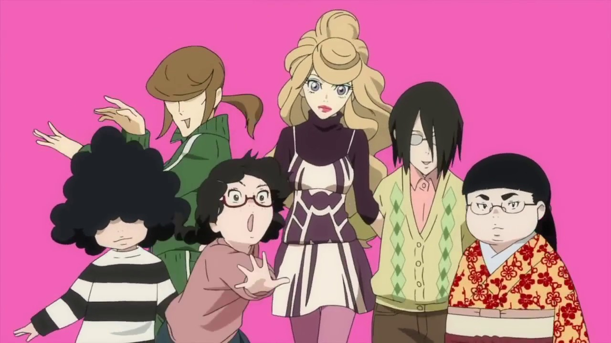
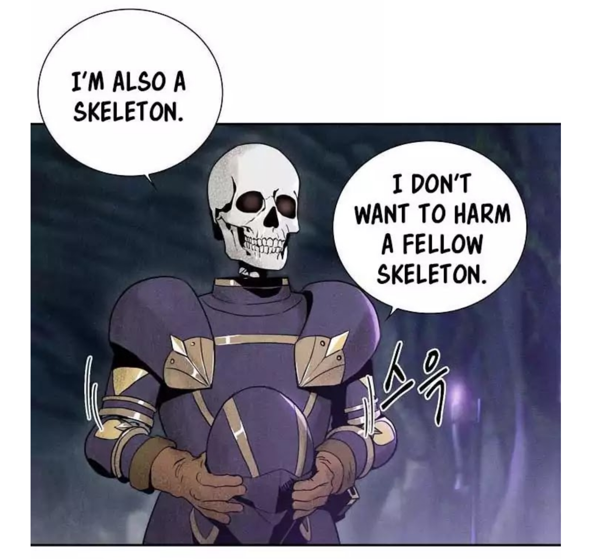
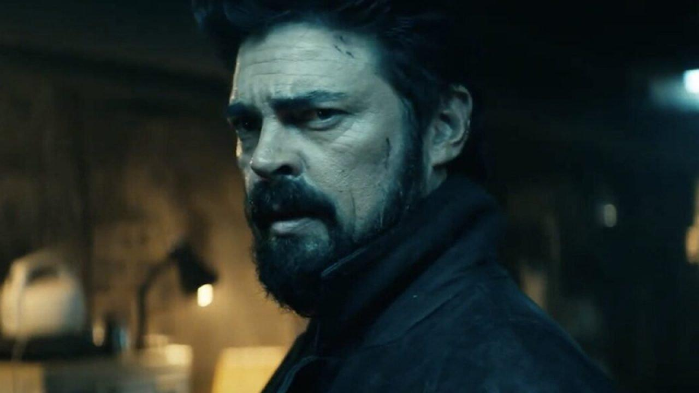
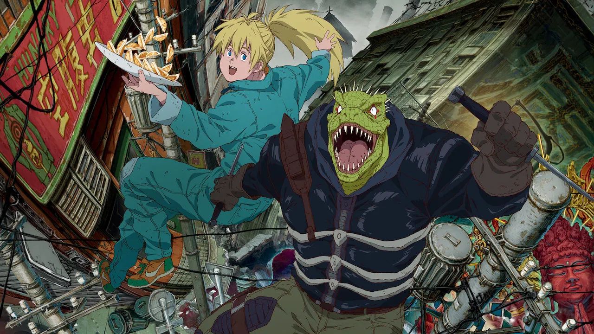

RSS Feed
RSS Feed
Reviews 8
14 Nov 2020Previously: One / Two / Three / Four / Five / Six / Seven
Tower of God (Anime)

I somehow forgot to review this last time, even though it's one of the shows I enjoyed the most of the last batch.
It's an adaptation of one of the most popular webtoon manhwa. I'd read the start of it a while ago (covering much more than this first anime season).
I can say it's a faithful adaptation which works really well. I feel like the anime medium has the potential to clarify some stuff that is not always very clear in the manhwa. They probably will have to simplify things a little in the future (and maybe they already have, but things are simple enough so far that it's impercetible).
The anime spurred me to reread the manhwa. Actually, to read most of the published stuff for the first time — it's still being published and my first read through was a while back. Since I just finished it, I'm going to say more about the manhwa immediately. You can just assume everything transposes to the anime as well.
Needless to say, highly recommended.
Tower of God (Webtoon - up to episode 485)
After staying vague in the anime description, it's probably fair that I tell you a bit more about the story.
The story centers around Bam, a boy that seemingly lived his whole life so far in some sort of huge cave, in company of a girl called Rachel (that you will soon come to hate). The story starts as Rachel is pulled off into "the tower", shortly followed by Bam — who is determined to find Rachel.
The tower is a whole universe, subdivided into floors, which are whole worlds onto themselves. It is moreover subdivided between the outer tower - which is just a collection of plain old worlds where people live, and the inner tower, where a select few are called. Usually, people are called into the inner tower from the outer tower, in which case they are called "regulars". Their goal is to climb the tower. Reaching the top seemingly makes one's dream come true — or something — but it requires powering up massively along the way in order to keep up with the competition. Climbing itself is achieved by passing tests (elaborate games that typically involve fighting) on each floor. Very rarely, people from outside the tower manage to enter the inner tower and climb (like Bam and Rachel) — these are called irregulars.
The strenght of the story, in my opinion, lies in the vast (very vast) crew of colorful and interesting characters that each come with their own background and motivations, and are deftly woven into the story.
A comparison that I find apt is that Tower of God is a bit like A Song of Ice and Fire (the Game of Thrones books): it too has a ton of characters that jump in a out of the story, and complex motivations and relationships between the characters. I find that too often anime/manga proceed in fixed "arcs" where you get to face the villain du jour with today's allies, which are quickly forgotten about. No so in Tower of God.
It's not quite Game of Thrones either. For one, there is much less dialogue between characters where they expose their motivations and share their life philosophy. Most of that comes in the form of flashbacks (though oftgen occasionally be narrated flashbacks). There are a few more quiet passages where character really "converse" about their feeling (as opposed to just trading information without accompanying emotional/philosophical sense-making), so the author can write them, but they are relatively few and far between.
In fact, in my opinion is that the writing gets a bit weaker towards the end of the currently published episodes, as the stakes expand. The story focuses less on floor tests and more on grandiose fights. Yet, games with complex ruleset is one of the story main's shticks, and the author finds a way to reintroduce them in the forms of various bets that the characters make to settle their differences. That feels a bit clumsy to me.
Another issue is that while the characters are the great strength of the story, there are simply too many of them. Most of them are interesting and could have their own story, but unfortunately, breadth comes at the expense of depth. It at times feel like we get to meet a character, learn part of his backstory, see him fight, and then he is forgotten.
Some of the early "main" characters that felt like a big part of the story haven't been seen in more than 150 episodes at this point.
The pace is rather fast, and it's fair to say that the webtoon is a page-turner (or rather, a panel-scroller). It's gotten me to neglect my sleep more so than usual a few times.
If I had to make another criticism to the manhwa, is that it's sometimes a bit hard to follow. In particular, games tend to have quite intricate rules — which I'm all for, but they aren't explained very clearly. I often realize partway that I misinterpreted the intent of the rules. You'd think that drawings would help, but alas very often it doesn't. The drawing are not especially confusing (except sometimes during fights), but they don't help that much. Also — and funnily enough — since at some points there are so damn many characters around, the author does not always draw all of them. That leads to some weird situations where you suddenly realize "oh, that guy was there all along".
But anyhow, I find Tower of God amazing and grandiose, and I strongly recommend you give it a look. Read it online here.
Perry Mason
The new Perry Mason show's trailer got me really hyped.
The character is reprised from the mythical 50's TV Show, which has already undergone quite a few reboots since then. In this case, it's an origin story.
The first episode, which I watched with my girlfriend, left us both thoroughly nonplussed. And we left it at that. Live on the hype, die on the hype.
Hellsing Ultimate
I had in the back of my mind that Hellsing was a classic, and I ought to see some. There are two versions adapting the original manga: an anime, and a series of 1-hour-long OVAs called Hellsing Ultimate. Similarly to Fullmetal Alchemist, the first (anime) version diverged to the (at the time unfinished manga), while Ultimate is faithful to the source material. The general sentiment on the internet was that Ultimate was by far superior.
But I ended up seeing only one of the episodes, which managed to bore me thoroughly.
I think this is a show about the aesthetics. Since I haven't mentioned anything of the show yet: it's about vampires. And two secretive organizations fighting the supernatural and one another. And gore.
To clarify, by aesthestics, I mean the mood of the modern-yet-gothic setting, not the art and animation which don't strike me as particularly something.
So if vampires are your thing, go for it. But I think that even if you have to throw the story to the wind, the new Castlevania anime is far superior, mood-wise, if you like vampires.
Fire Force S2
I've done quite a reversal on this one from my season 1 review. I dropped it after 3 episodes. It's not that it was bad per se, but rather my time was getting rather limited, and I just found this to be the worst of the anime I was watching.
There were a few things that informed my decisions. First, these three episodes were relatively filler heavy. But when they weren't they just added more seemingly disparate strands in the story. I would expect it to go into a bit more depth in the characters and explore their relationships, or explore the revelations from last seasons. Instead, new elements are piled on top.
Having many balls in the air is not necessarily a bad thing — see Game of Thrones (the books and the book-inspired seasons) for an example of how to do that masterfully. But it is bad if it comes at the expense of depth. Here I have the feeling that many of the introduced side-players are not ultimately relevant to the storyline. This is not an intricate inter-woven story, but rather a straightforward story that keeps stalling by adding side-cast and side-stories.
To be fair, this should still be fairly entertaining, but it just didn't make the cut this time.
Kaguya-sama: Love is War Season 2
Not much to add to my review of season 1, this is still great. In fact, I was surprised that they managed to keep the formula so fresh.
I get the feeling that the people writing this are quite clever. It's not easy to balance the line between running gag (a big component of the humor) and unexpected, funny development.
Story-wise, the relationship manages to both progress and stay in the same place, which is quite an achievement.
I'm quite curious to see what they have in store for season 3.
The Life-Changing Magic of Tidying Up (Marie Kondo)
This is a super famous book on a tidying method that famously preaches getting rid of anything that "does not spark joy". It even spawned a Netflix series.
I'm pretty organized, and also pretty sympathetic with what I'd heard about it. But the real reason I read it is because my girlfriend is a fan. I didn't actually read it. I listened to the Audiobook. It's fairly short: about 4.5hrs — less if you speed it up.
I'd actually read quite a few things about this a few years ago, most notably this nice article, but I also perused some summaries you can find on the net, such as this one. So actually listening to the book didn't really teach me anything.
Which didn't mean it was all that uninteresting. Marie Kondo is quite the character. I'm a major nerd, but I was at time slightly creeped out by the depth of her obsession with tidying. I also was surprised that she seemed quite superstitions and ... pop-spiritual? I know she's a Japanese woman, but that seemed too easy of a stereotype. It's not just for the sake of the original audience either — the woman does talk to her clothes and to her house, after all. Not my jam, but ultimately just a funny detail.
What the book also tries — and achieves — is selling the cleaned-up lifestyle. Kondo goes to great length to paint a nice picture of your life in a clean, zen-like environment, where you can enjoy a hot cup of tea (or your beverage of choice) surrounded only by those objects you love.
There is a lot of advice in the book (it's quite actionable), but what I personally got out of it was a bit of motivation to sort out my stuff a bit more.
FLCL
I didn't know much about FLCL (pronounced Fooly Cooly) going in, except that it was well regarded, and that it had great music by The Pillows.
It was ... not what I expected. It's completely crazy, opaque, and quite incomprehensible. Ok, to be fair, you kinda follow along, it's just that the plot is not intended to really make sense, as is clearly stated during a couple of 4th-wall breaks.
Still, it's entertaining, by virtue of being an unrelenting assault on the senses. It feels like each episode is a fan edit of a whole 4-6 episodes arc that actually makes sense into a single ultra-condensed episode.
What surprised me when writing this review is how old this anime actually is. It's from 2000 - 20 years old. Yet it looks so modern. I pulled the page for Gainax (the studio) and they published this the year before, and that the year after. FLCL must really have looked like an OVNI, it's no wonder it made such a splash.
It not only looks modern, but also sounds modern. At least it's as out there today as it was back then — though we probably are more accustomed to "out there" things today.
So, I understand why it's a classic. I'm pretty happy to have seen it. It's very short (6 regular-sized episodes), which helps to make it go down easy. I don't think I would say it was a good anime, but it was quite an experience which I'm unlikely to forget. For some, that's what it means to be good.
The Good Place Seasons 2, 3 & 4

Previously: Season 1
The good place keeps entertaining! I wondered how they would keep things going and entertaining after the big twist at the end of season 1, but they managed brilliantly.
Without spoiling too much, season 2 features a lot of character development for one particular character in a way that really adds to the dynamic of our little group.
Season 3 is quite different from the previous one, as it's the first one taking place mostly on earth. It's also a bit more disjointed as the original "plan" gets disrupted midway. All in all, a good job in keeping the charm without exhausting the concept.
I did actually have again a pretty large gap (two months or so?) between season 2 and 3, and it was a pleasure to come back to it.
Season 4 was pleasant too. I felt like the start was maybe a bit weaker, but the enjoyment is still there.
The show frequently engages with philosophical questions, but the end was, I think, the most interesting stab at this in the series. In term of watching experience, I love it. But as far as the philosophy is concerned, I hate it. Let me discuss it being a spoiler tag.
Discussion with spoilers.
So the final arc of the good place grapples with the idea of immortality, and eternal boredom. Basically, everyone in the real good place is bored out of their minds. The solution the protagonists come up with is simple: let people die for real (no afterlife), whenever they chose to.
In principle, this is a good solution. I'm generally pro-freedom, people shouldn't be forced to live, especially forever (no quoting out of context: we should make effort to keep depressive people alive here in the real world). But also, nobody should be forced to die, and the solution leaves open the possibility to live forever.
I worry, however, that the philosophical message is all wrong. It says something like "life is worth living only because it ends". One of my controversial opinion (though really, I don't think it should be) is that we should strive to live forever, i.e. fight the disease known as aging. This parable is an excellent introduction if you're not familiar with the idea (there's also a narrated/illustrated version).
I just don't think that I'd ever get bored if I were to live forever. The
truth is that the world moves faster than we can apprehend. There are constantly
new
I really think "death makes life worth living" is more of a cope than anything else, because in the current state of things we are all destined to die, and it does make us feel better to believe currently unavoidable death is somehow meaningful. Unfortunately, this has the side-effect of generating anger towards people fighting the good fight against aging. It shouldn't be so - aging is the number one cause of mortality. People typically talk a big game, but it seems to me that nobody who's not greatly in pain (mentally or physically) ever chooses to voluntarily end their own life. If given the choice, anybody who isn't tremendously suffering will choose to live another day, every single day.
Enough about the philosophy. I said that despite this, the final arc was great. It is, because — you guessed it — most of the characters eventually decide to die, and the idea is executed gracefully, providing an emotional payload that is only appropriate for the season finale. I don't think I can say much more than that.
Re:Zero Season 2 (Part 1)
Previously: Season 1
I had big expectations ... and it's too early to tell if they will be met or not. Season 3 certainly kicks off fast & hard, and difficulties and mysteries keep piling on ... and on ... and on. What's going on?
Past what I would say is the "introduction" of the season, the arc becomes very unusual because (1) the number of variables seemingly keep increasing all the time, and (2) it doesn't have a proper ending!
The decision to split the season in two parts, with the break before the arc could find a resolution, seems very questionable to me.
It's not that the setup is bad — mostly it is excellent. It's that the timing is deplorable. The show builds up tension for 10 weeks, and then goes on hiatus for months. Chance is we won't remember all the balls that are in the air when part 2 comes around. And there are now more balls in the air than ever.
Also while the setup is excellent, it's hard to offer commentary on the arc without knowing its resolution. A crappy resolution could make the setup worthless, while a good one will sublimate it.
If you haven't seen this yet, my advice would be to wait and watch it only shortly before part 2 comes around.
Deca-Dence
If you go into Deca-Dence blind, the second episodes yield a pretty unexpected twist (read at your own risk).
Deca-Dence is an original story (not an adaptation). Earth is now a sort of post-apocalyptic MMORPG entertainment park for androids living in a space station. The last humans live in the mobile fortress Deca-Dence, which they mostly maintain, while androids log into human-looking avatars to fight the post-apocalyptic monsters that threathen the fortress (that's the "entertainement"). But the humans are not aware of all this.
Mostly, Deca-dence is okay. The story is good but not great, so are the characters. It's above average without really shining.
I'm not a fan of the pseudo-chibi style used to depict the androids. I think it might have been selected in part to reduce cost and speed up production, but it adds nothing artistically speaking (and I just don't like how it looks).
Lukewarm recommendation.
The God of High School

This anime gets my award for worst-named anime of the year. No high school is actually featured, and the protagonists neither look nor act like they're high school students (more like 20-somethings).
Okay, this is really the anime's fault. This is actually an adaptation of a webtoon manhwa of the same name, made in collaboration with CrunchyRoll, just like Tower of God. And this time too, it's one of the most popular manhwa on webtoons.com.
Let's get it out of the way: the story isn't really brilliant. The titular "Gof of Highschool" is actually a free-style everything-allowed mixed-martial-arts tournament (powered by convenient nanobots that can heal almost any wounds).
The early season is heavy on flashbacks that flesh out the personality of the main characters and also various other secondary characters. It's not exactly subtle, but mostly it works.
Partway, it is revealed that most of the stronger participants use "charyeok" to draw on the power of some kinds of spirits/divinity — because eh, why the hell not? It's almost funny how everyone takes it in stride that some fighters have basically magical powers.
Indeed, God of Highschool doesn't really bother to avoid straining credibility. Surprisingly, this ends up working to its advantage. While fights start innocuous enough, they escalate to ridiculous over-the-top mystically-powered world-threatening WTF-inducing affairs by the end of the season. And it works.
Being more of a story guy, I didn't expect to enjoy this so much, but enjoy it I did.
Rent-a-Girlfriend (Kanojo, Okarishimasu)
This "harem" anime was popular this summer, but I'm going to give it a "meh".
The plot is simple: main guy Kazuya uses a girlfriend-for-rental service to go on a date with main girl Mizuhara. Accidentally they get introduced to each other's grandmothers and have to keep the pretense up to keep them happy.
The main problem with the show is the cast. Mizuhara is probably the best of the lot, in a harsh-but-secretely-kind way, though there's nothing incredible about the characterization. The other girls thouh... you have a psychopath, an extremely overly attached girl, and a girl that appears in a single episode (all four being prominently featured in the OP and ED). As for Kazuya... let's just say he makes Shinji "just get into the robot" from Evangelion look like a paragon of bravery and poise.
On the other hand, the character designs are pretty cool. But still meh.
Hunter x Hunter 2011 (14 episodes)
I watched the start of this show on a couple recommendations, but I'm conflicted about it. It's a sympathetic show, but it hasn't given too much reason to care so far.
What surprised me most about it is that the anime came out in 2011. It feels more like a Pokemon-era anime, or even Dragon Ball-era. This can probably be explained by the fact that it's an adaptaiton of a 1998 manga, and also the reboot of a 1999 anime series. I'm wondering if it would have been possible to impart a slightly more "modern" flair to the series (not that the vintage style detracts).
The main issue I have with the series so far is that it's quite slow. It's not quite filler, but there are quite a few episodes that could be easily compressed to half the time without losing much. It's not so much about useless plot as about timing — scenes just seem to linger a bit (or for some, a lot) longer than they should.
I've also been told the first arc is not the best, so I might give it another shot, but I think I'll give some other animes a chance in the meantime.
Kuragehime (Princess Jellyfish)

This is one of my girlfriend Sasha's favorite anime. And what can I say, the lady's got good taste.
I struggle to explain why this is good. It's josei, so admittedly not the genre I'm the most familiar with. I think mostly it comes done to great loveable dorky characters, and impeccable timing that never leaves you bored nor makes you feel hurried.
The show is about a sisterhood of major lady nerds (each nerding on a very specific topic). Things are shaken up a little bit when a stylish lady enters their lives and the future of their shared housing is threatened. The story is a solid driver, but isn't going to have you gripping the edge of your seat. Again, you're going to be watching this for the characters.
There is one short season (11 episodes), forming an incomplete adaptation of a longer manga series. It stops at a logical place, but quite clearly the story is far from over.
Tenet
I've enjoyed all of Nolan's films that I've seen, and this one was no exception.
Like many of Nolan's film, it features a complicated time structure. This time dealing with actual time travel — sort of. If you really liked the idea of Inception, you might feel at home here.
Let's tackle the elephant in the room: the movie will hurt your brain. The time-travelling mechanism presented is not intuitive and has a lot of fun but finicky implications. This is definitely the most complex time-travel movie I've seen, maybe tying with Primer.
I actually enjoy these kind of movies. At least if I'm able to figure out most of it, or if it's explained at some point. I managed to follow the plot pretty well, and fortunately, because what transpires in the most intricate scenes is never laid out explicitly. The movie never stops to do a play-by-play of what transpired, and the criticism I've heard is that it left some people stranded during the viewing. Fortunately, the movie is still enjoyable as-is (you can still follow), but if you want pure actions, there are better flicks.
So all in all, a unique viewing experience.
Skeleton Soldier Couldn't Defend The Dungeon (up to chapter 109)

Skeleton Soldier (for short) is a another webtoon manhwa I've been devouring one month or two ago, catching up to the current state of publication.
It's about... a skeleton soldier, that dies, but is reborn. Except this time, he's some sort of RPG protagonist in his own world. He can level and acquire abilities. If he dies, he travels back in time to start again, but keeping his level and abilities.
It's an interesting premise, and the webtoon does it justice by introducing interesting characters that kriss-kross through the skeleton's multiple lifetimes, and setting up engaging mysteries about the universe.
The fact that skeleton can die is a big plus story-wise. Even though death is merely a setback, the skeleton is invested in his "lifetime", typically building relationships with other characters who will forget all about him if he dies. He's also typically trying to achieve something. The hero actually being able to die and be meaningfully set back does avoid the "plot armor" problem where the hero always succeeds.
As for having a skeleton as a main protagonist, that's also an interesting choice. It's ultimately not a huge deal (this would have worked just as well with a human), but it's an interesting twist that the story does exploit.
The premise and setting bears a lot of resemblance to Solo Leveling, a webtoon I'm currently reading (review next time, probably). I'd say that from what I have read so far (~ 70 chapters), Skeleton Soldier has the more interesting and intricate story. Solo leveling being very enjoyable still.
Very recommended if you're into RPG, isekai or action manga/manhwa at all.
Rick & Morty (Season 1 & 2)
Finally, I'm giving the phenomenon a shot, watching it with Sasha (it's a rewatch for her).
It's good. It's weird. It's definitely somewhat unique. I'm not sure it hypes me up incredibly however.
The problem might be the episodic nature. I like stories, and most episodes don't really move the story or the characters forward.
The show is notoriously absurd or over-the-top sometimes, and while it's not something I generally enjoy, it works okay here.
Ultimately, what I liked the most so far were the really dark moments, where characters hit rock bottom (in a way that is not just implied to be funny and temporary) and have to live with the consequence of their actions.
Episode 6 of season 1 is the best example of that, and is my favorite Rick & Morty moment by far. Season 2 also built something like that, but it's up to season 3 what to make of it.
The humor is okay by me, but if I were in for the laughs, I'd rather watch Brooklyn 99 or The IT Crowd or How I Met Your Mother.
I wonder about the popularity of this. Is it for others like it is for me, that the enjoyable but light nature of the show, punctuated by unexpected gut punches that makes it memorable?
The Boys (Season 1 & 2)

Finally, a show gave me a reason to check out that Prime video I have since forever!
In this show, superheroes are real, and they're a big business. In addition to being a contractor police force, the whole Marvel-style cinema/comics/merchandising complex is in full swing. All the big names are being managed by a megacorp called Vought. Unfortunately, not all superheroes are as nice as it seems, and many are assholes and downright psychopaths.
The destiny of the main protagonist is changed when his girlfriend is caught in an "accident" involving a superhero, and a man called Butcher offers his help to take down the responsible superhero.
One thing to be remarked about the show is how it situates itself in the zeitgeist. It has Marvel-style hero mania, sexual harrassment scandals, marketing-driven diversity, social justice, political polarization, christian fundamentalists, using terrorism as an excuse to do nefarious shit, and even meme-based opinion campaigns. And mostly, the show makes it work.
The show is adopted from a comic book, but from what I've read, it takes a lot of liberty with the original material — I think its situation within the zeitgeist is an example of that. The original comic started publishing in 2006, two full years before the first Iron Man movie (arguably the first modern MCU movie).
The first season was my favourite of the two. The story is more straightforward. The second season ... I have mixed feelings about. Well, it was very good, and very enjoyable to watch. Some small elements felt off, however. In particular, it felt that sometimes "world-level" happenings are being pushed to drive the plot forward in a way that is unsubtle, and not particulary credible — typically involving fickle public opinion. Some choices were questionable to me. Did the plot really need to involve actual nazis (not neo-nazis, but 1940s nazis)?
However, the second season also pulls no punches. The third episode could basically have been a season finale, and it gets crazier after that. I thought the ending was a bit of a cope (an easy way out, if you will), but eh.
Shoutout to Karl Urban, whose Butcher is fantastic. And shoutout to the writers for making Hughie not too annoying. After watching the first episode, I expected him to be a painful drag of a protagonist, but the writers dosed his reticence just right, so this didn't happen.
What else? Anti-heroes, obviously, in a very literal sense. Morally gray, as they are not always entirely morally upstanding. Butcher, in particular, has to deal with his demons.
Well worth watching, feels very fresh.
Dorohedoro

Dorohedoro takes place in some sort of slum called "the hole" that is connected to a magical realm. Sorcerers regularly come out to "practice" (which mostly involves transforming, killing and mangling innocent holes denizen). The protagonist Caiman lost all his memories and his head was changed to that of a reptilian, presumably due to such an encounter. Together with his cook friend Nikaido, he tries to reclaim his memory and original form. Doing so, he'll face against a gang of magicians including a dude that turns everything into mushroom.
Dorohedoro is kinda crazy, but in a good way. I liked the humor and the action, and for a universe that is so non-sensical, the world-building is suprisingly solid. The story is solid, with clues to the main mystery being given throughout.
I also greatly appreciated that the anime dumps you in its universe, giving you information as necessary instead of doing tedious information dumps.
My only regret is that after the 13 episodes first season, it feels like we have barely scratched the main story, and a second season hasn't been confirmed (yet?).